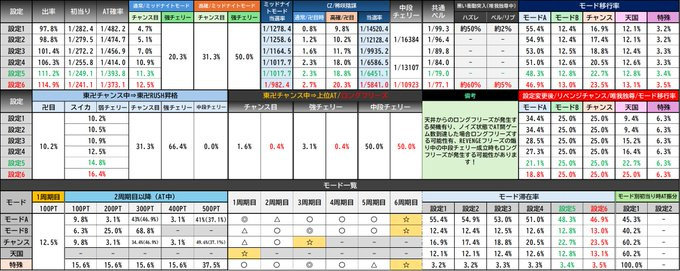
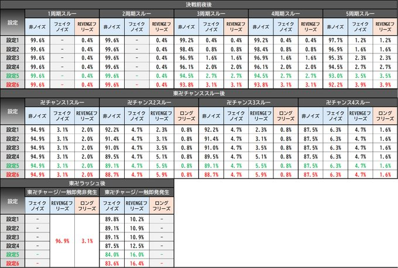
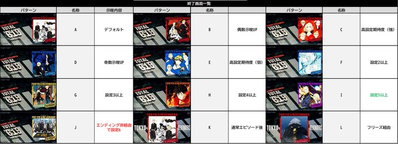
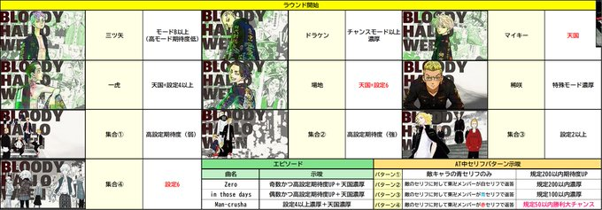
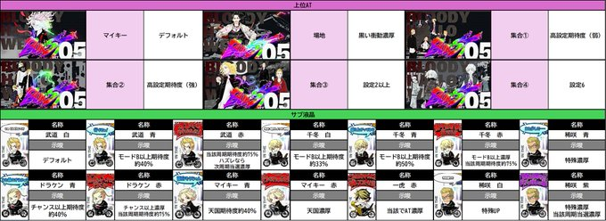

判別の手順
マイスロログイン、共通ベルカウント、初当たり等当選確率
判別の優先度
①②をメインに判別、③も強力。④〜⑩は要素としては強いが、出現率が低い
①共通15枚ベル確率
設定1〜6：1/99.3〜1/77.1
②終了画面
デフォルト
設定1〜6：約34%〜約21%
高設定示唆(強)
設定1〜6：約6%〜約15%
③朝一/上位CZ後の天国・モードA選択率
天国
設定1〜6：9.4%〜25%
モードA
設定1〜6：34.4%〜18.8%
④REVENGEフリーズ発生率
決戦前夜3,4スルー時（ノイズ発生）
0.8%〜6.2%
東卍チャンス2,3スルー時（REVENGE発生）
2.3%〜5.9%
⑤CZ確率
ミッドナイトモード初当たり
1/1278〜1/990
稀咲陰謀初当り
1/14520〜1/5841
⑥黒い衝動突入率
リベンジチャンス成功契機
ベル・リプレイ
4〜16%
天上天下唯我独尊 成功契機
はずれ
12〜28%
ベル・リプレイ
2〜5%
⑦東卍CHANCE中の東卍RUSH当選率
スイカ・弱チェ成功率
設定1〜6：約10.2%〜約16.4%
⑧東卍RUSH確率
設定1〜6：1/482〜1/373
⑨周期別平均当選率
2周期当選率
設定1〜6：20.5%〜27.8%
3周期当選率
設定1〜6：39.7%〜51.9%
⑩ATセットストック確率
1セット当選率
設定1〜6：4.7%〜8.2%
3セット当選率
設定1〜6：0.4%〜2.3%
共通15枚ベル判別方法
通常時
上段ぞろいの15枚ベル
AT中
押し順ナビ無し → 上段ぞろいベル
押し順ナビあり → セグなしの15枚ベル
補足
AT中まで数えられれば判別精度が上がるが、通常時のみのカウントでも可。
※通常時・AT中共にマイスロには反映されないため注意
設定別データ

設定別ノイズ・フリーズ発生確率

AT終了画面の示唆

ATラウンド開始画面の示唆

上位中ラウンド開始画面・サブ液晶の示唆
